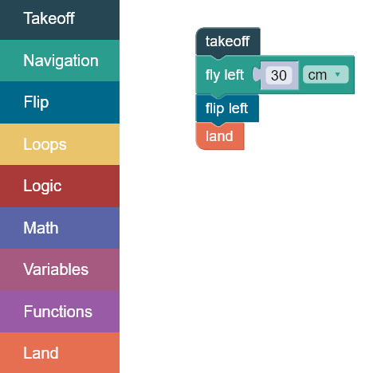
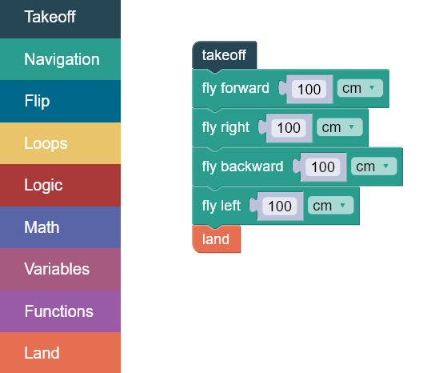
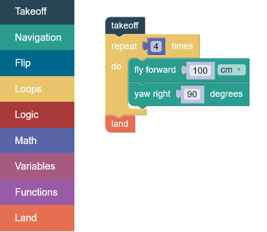
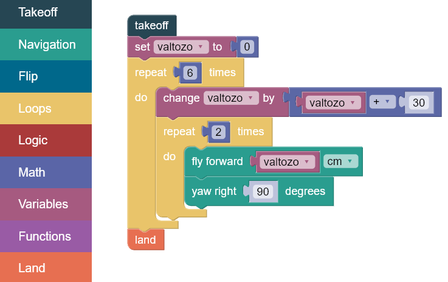
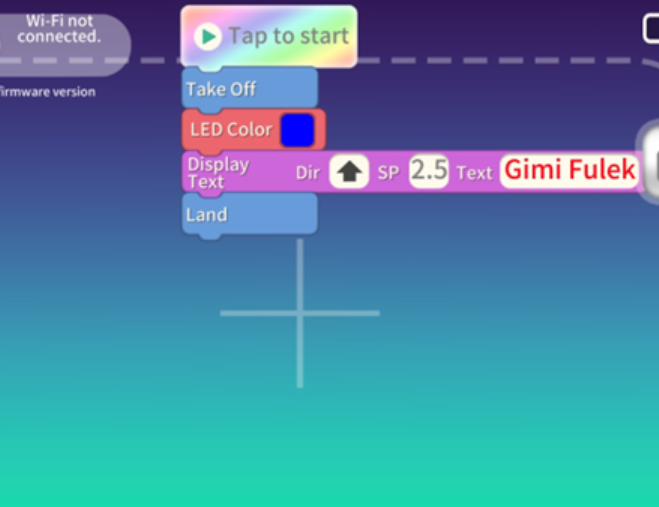
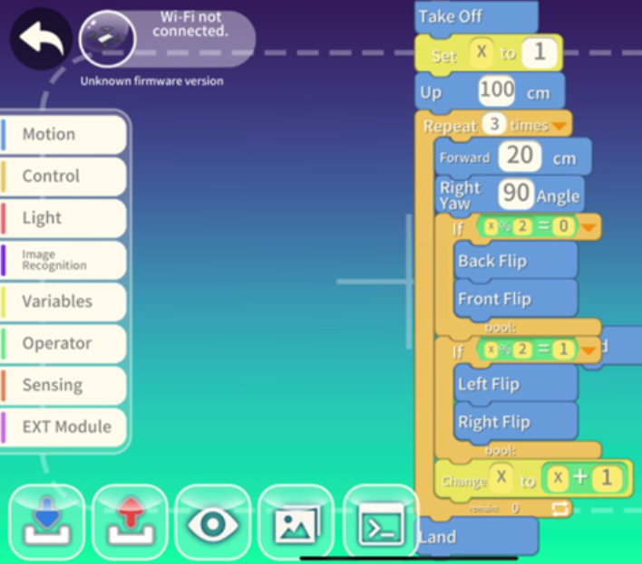
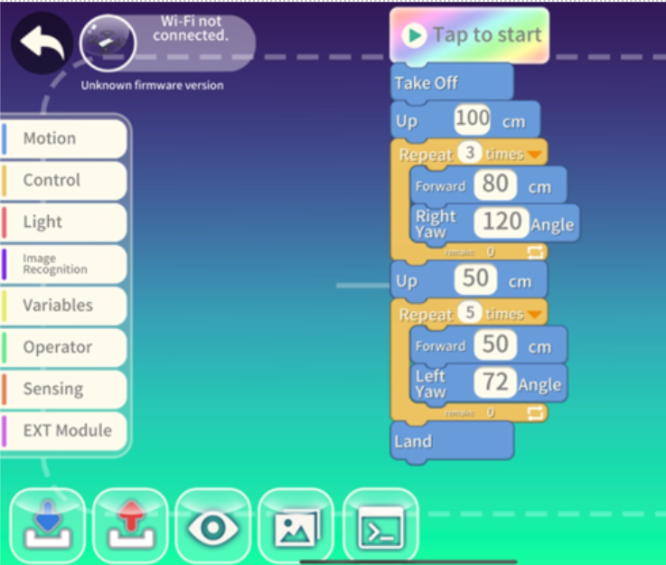
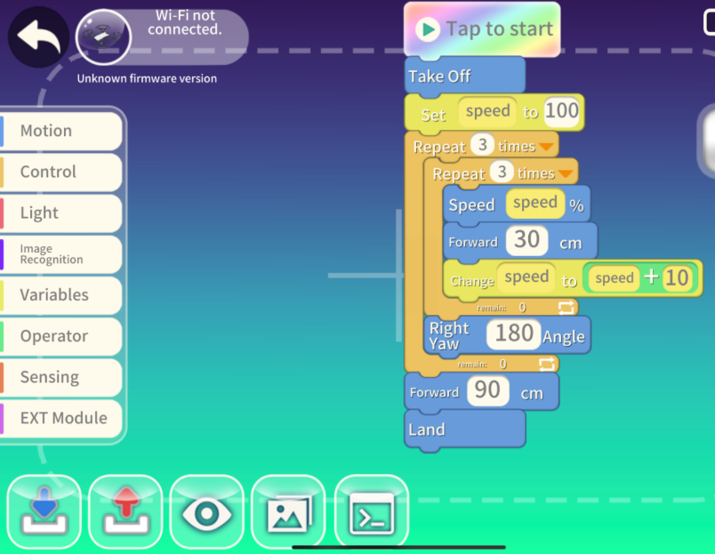

Példák

DroneBlocks

Ebben a blokkban ismerkedhetsz meg a programozás alapjaival, amit majd a további blokkok kódjaiban is hasznosítani tudsz.
A drón szálljon fel, menjen balra, csináljon egy balra szaltót és landoljon.

A drón egy négyzet pályáját írja le a levegőben elfordulások és cikus használata nélkül.

Az ismétlődő utasításokra a Repeat (ismétlés) blokkot használhatjuk. A Repeat blokkot más programozási nyelvekben ciklusnak (loop) nevezzük. Csupán azt kell megmondani, melyek azok az utasítások, melyeket a drónnak többször kell végrehajtania, ill. azt, hogy hányszor kell azt ismételnie. A feladat ugyanaz, csak most használjunk ciklust és elfordulást.

A drón repüljön előre 30 cm-t, majd jöjjön vissza, forduljon meg, majd ismételje az előző mozdulatot, de még plusz 30 cm-rel. Ezek a lépések ismétlődnek legfeljebb 180 cm távolságig.
Mivel túl sokáig tartana egyenként az összes parancsot berakni, ezért ciklust és változót használunk a feladat megoldásához.

A drón írjon le egy kígyó mintát: menjen előre, jobbra, előre és balra. Ezt a mozdulatsort imsételje kétszer, majd forduljon meg és térjen vissza az eredeti pozícióba.
Használjuk a korábban megtanult Repeat blokkot, illetve a Tello Logic
nevű blokkcsoportját. A Tello Logic blokkcsoportja arra ad lehetőséget, hogy a döntéseket lekódoljuk.

Sajátísd el a programozás alapjait egyszerű programokkal és a hozzájuk fűzött magyarázattal. A feledatgyűjteményben még további megoldott példákat találsz.
Ezt a programot csak a Robomaster TT-vel tudjuk futtatni, mivel a Tello EDU nem rendelkezik bővítőmodullal.

Ebben a programban minden alapot felhasználunk.

Az előző blokkban négyzetet, most háromszöget és ötszget írünk le.

Előre repülés folyamatos sebességnövekedéssel.

A drón ívben repül (háromszor), majd vár és készít egy fényképet.

Az összes programot megtalálod a feladatgyűjteményben, a parancsok leírását pedig "Dji Tello és Robomaster TT" elnevezésű fülön a Python és a Mission Pad fejezetekhez hajtva.
A drónrajt is lehet Tello EDU Appban és Pythonban is programozni. A drónok és a router összecsatlakozatátásáról szóló videót megtalálod "Dji Tello és Robomaster TT" elnevezésű fülön a Drónraj fejezetnél.

Free AI Website Maker